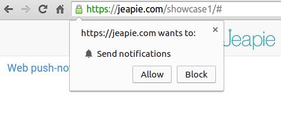

Website SDK HTTPS Installation
Jeapie SDK Installation for Chrome websites (desktop + mobile)
Requirements
W3C Web Push Notifications are currently only support by Chrome 42+
- Includes Chrome for Windows, Mac OSX, Linux, Chrome OS, and Android but not iOS.
HTTP and HTTPS
If some of your pages are served via HTTP instead of HTTPS then you will need to follow our HTTP Installation Guide instead.
If possible, we encourage you to migrate all your pages to HTTPS first and then continue using this guide.
1. Download the SDK
1.1 Download the latest version of Jeapie Chrome Web SDK after the registration your site in the Jeapie Dashboard.
1.2 Copy push-worker.js and manifest.json from jeapie_sdk_ out of the directory and into the top level root of your site directory.
2. Include Required Files
2.1 Include https://cdn.jeapie.com/jeapiejs/webpush.js and manifest.json in the <head> HTML tag of each of your website pages. The best way is to add these to the code that generates the layout for each of your webpages. The resulting HTML should be the following:
<head>
<script src="https://cdn.jeapie.com/jeapiejs/webpush.js" ></script>
<link rel="manifest" href="manifest.json">
</head>
3. Initialize Jeapie
3.1 Init with auto register.
Call Jeapie.init from a javascript file that is included on every page. Update 0e9b2d82456a5ad012714e981d972360 with your Jeapie AppId. Add param autoRegister with value true.
var Jeapie = Jeapie || [];
Jeapie.init({"appId": "0e9b2d82456a5ad012714e981d972360", "autoRegister": true});
The user will see a window asking for permission to receive notifications from your site immediately after the opening page

3.2 Init with your custom button.
Call Jeapie.init from a javascript file that is included on every page. Update 0e9b2d82456a5ad012714e981d972360 with your Jeapie AppId. Create or use your button and update YOUR_CUSTOM_BUTTON_ID with your button id
var Jeapie = Jeapie || [];
Jeapie.init({ "appKey" : "0e9b2d82456a5ad012714e981d972360"});
//Replace YOUR_CUSTOM_BUTTON_ID with your button id
document.getElementById("YOUR_CUSTOM_BUTTON_ID").onclick = registerPush;
function registerPush() {
Jeapie.registerUserForPush(function(success){
if (!!success) {
//your custom action
}
});
}
The user will see a window asking for permission to receive notifications from your site immediately after click on button.
Even you can create your own logic and call registerPush() method.
3.3 Init with Jeapie Widget.
Call Jeapie.init from a javascript file that is included on every page. Update 0e9b2d82456a5ad012714e981d972360 with your Jeapie AppId. Add param createButton with value true.
var Jeapie = Jeapie || [];
Jeapie.init({ "appKey" : "0e9b2d82456a5ad012714e981d972360", "createButton": true});
On your site will be a button, when clicked, a window will appear to allow notifications from your site

Important
You must keep all files SDK together. https://cdn.jeapie.com/jeapiejs/webpush.js, push-worker.js and manifest.json must be placed at the root of your site directory.
https://cdn.jeapie.com/jeapiejs/webpush.js and manifest.json must be located in the head html tag in every one of your pages. This is so any page can subscribe for notifications, any page can be set to be opened from a notification, changes to the Google Registration id can be updated, and session count can be accurately counted.
That's It!
That's it for the setup. See our Web SDK API for more functions.